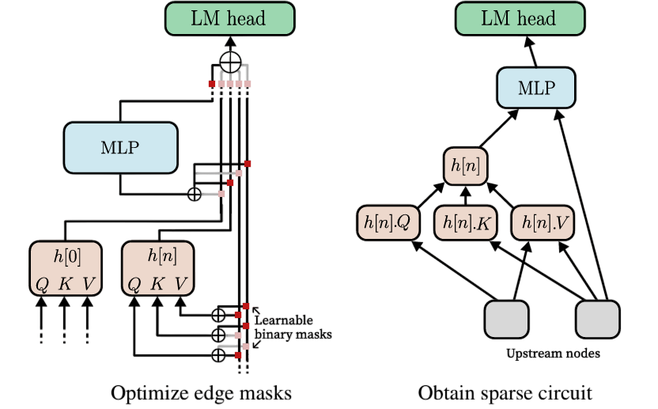
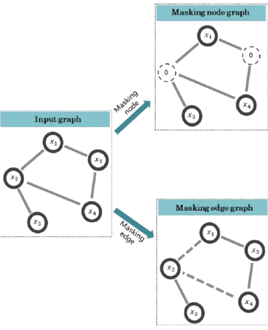
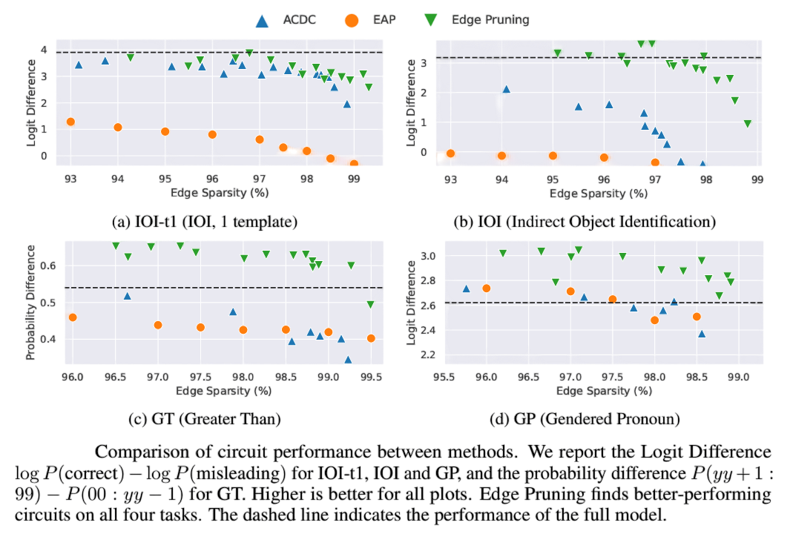
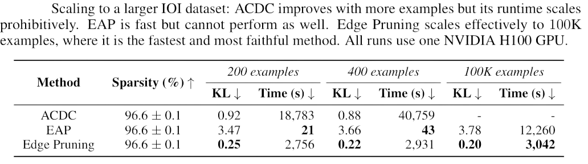
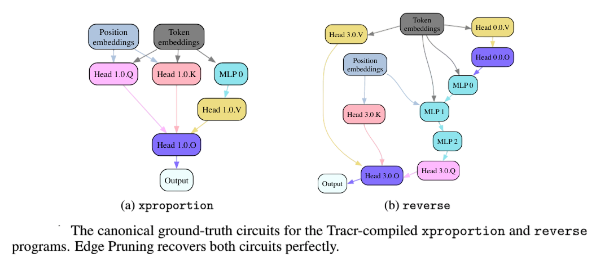

Unraveling the Mysteries of Language Models: The Power of Edge Pruning in Finding Transformer Circuits
Unraveling the Mysteries of Language Models: The Power of Edge Pruning in Finding Transformer Circuits
Article: Finding Transformer Circuits with Edge Pruning
Authors: Adithya Bhaskar ${ }^{1}$, Alexander Wettig ${ }$, Dan Friedman ${ }$, Danqi Chen ${ }$
${ }^{1}$ Princeton Language and Intelligence (PLI), Princeton University
adithyab@princeton.edu
{awettig, dfriedman, danqic}@cs.princeton.edu
Authors of this blogpost: AHMED Ayan & AHMED Rayyan.
What if we told you that the technology shaping our generation is still a black box and we might know nothing about it?
Language models like ChatGPT are revolutionizing the way we communicate, create, and seek information. Not only do they complete our sentences and answer our questions, but they even generate original ideas by using billions of training data—but on critical examination we should ask ourselves this one primary question, do we truly understand how they work? Without looking inside these models, we risk a state of stagnation, where we rely on them without refining or improving their potential.

To push the boundaries of AI, we need a way to decode their inner workings, to see which components drive specific behaviors, and to do so with precision and efficiency.
It is like trying to fine-tune an orchestra while being blindfolded. You can hear the symphony, but without seeing which instruments are playing which notes, making deliberate adjustments is nearly impossible unless you have a perfect hearing sensation(only 1% of the population has it!). Similarly, the intricate mechanisms of language models have long remained a mystery. We try to understand them effectively by making them more transparent, but so far, we have not reached there. Now, a groundbreaking technique is emerging, ready to lift the veil and transform our understanding of these powerful systems.
Table of Contents
- Introduction
- Why do we need Circuit Discovery?
- Diving into the Proposed Method
- Experiments
- Results
- Case Study: Scaling to 13B Parameters
- Last Few Words of Wisdom
1. Introduction
Motivation
To tackle the aforementioned issue, researchers have turned to the concept of “circuits”—sparse computational subgraphs that highlight key interactions within a model (the definition sounds a bit complex, but it is exactly what it sounds like). These circuits serve as pathways through which the information flows and they offer a structured way to analyze which components are responsible for particular behaviors.
Think of it like the electrical wiring in your home. Every switch, bulb, and appliance is connected through a network of wires, but understanding which wire controls what can be a tangled mess!
The ideal scenario? A streamlined, minimal wiring system that preserves full functionality without unnecessary complexity.

Similarly, when analyzing the language models, researchers aim to identify circuits that are as sparse as possible—capturing only the most essential connections while maintaining the model’s performance. However, automating this process of finding circuits still remains a challenge, and existing methods as explained further, often fail to produce circuits that are truly minimal and interpretable.
The paper “Finding Transformer Circuits with Edge Pruning” introduces an exquisite technique as a counter to this problem. By taking advantage of a technique called Edge Pruning, it offers a scalable, fast and efficient approach to discover circuits, allowing researchers to peel back the layers of complexity and reveal the fundamental mechanisms of Language models at play. This advancement has keen implications for natural language processing, pushing us closer to a deeper understanding of how these models operate.
In this blog post, we’ll explore the details of this paper, breaking down the concept of edge pruning, its usage on some popular datasets and finally seeing if this technique scales well with model size.
Existing Frameworks
Currently, there are two primary methods that help us automate the discovery of circuits in language models: ACDC and EAP.
- ACDC uses a greedy search algorithm, which is effective but is highly computationally expensive and struggles to scale to larger models or datasets.
- EAP, on the other hand, takes a shortcut by using first-order approximations, making it more efficient but at the cost of fidelity—it doesn’t fully capture the true behavior of the model.
Another important point to highlight is that these approaches majorly focused on model compression by sparsifying circuits. Their main objective was compression rather than circuit discovery, leading them to remove entire components within the model, such as attention heads or MLP layers.
Beyond Approximations and Greedy Search
This paper introduces a fresh perspective on circuit discovery by “recasting it as an optimization problem” and solving it through gradient-based pruning—a technique called Edge Pruning. Unlike previous approaches as discussed before, Edge Pruning cuts unnecessary connections (edges) between components rather than removing the components themselves, leading to a more efficient and scalable solution.
Imagine trying to simplify a complex metro system. Instead of shutting down entire stations (which could break the network), you strategically remove redundant rail connections while preserving the city’s accessibility.
In a very similar way, Edge Pruning refines the structure of a language model by isolating only the most crucial connections, ensuring that its core functionality remains intact while minimizing unnecessary complexity.

The authors put Edge Pruning to the test in multiple benchmarks, evaluating its ability to:
- Identify circuits that faithfully represent the behavior of the model.
- Recover known ground-truth circuits.
- Scale efficiently to large models and datasets.
- Discover extremely sparse circuits in massive language models.
The results are compelling—Edge Pruning consistently outperforms prior methods in both speed and performance. For example, in the multi-template IOI task, it identifies circuits with as much as 2.65× fewer edges than the next-best method while maintaining the same level of accuracy in predicting model outputs.
Scaling to Large-Scale Models
One of the most groundbreaking aspects of Edge Pruning is its ability to handle massive models. The authors demonstrate this with CodeLlama-13B—a model 100× larger than GPT-2 Small. In a case study inspired by the BBH benchmark, they analyze how instruction-prompting and in-context learning mechanisms function. Shockingly, Edge Pruning identifies circuits with just 0.04% of the model’s edges, yet these circuits still capture the model’s full performance.
Moreover, their findings reveal that there are significant overlaps between the circuits driving these two learning paradigms.
This breakthrough paves the way for deeper interpretability of large-scale AI models, offering a scalable and precise method to uncover the hidden logic behind their decision-making processes.
2. Why do we need Circuit Discovery?
Imagine a complex network of roads and highways that connect different cities and towns. Each road represents a connection between different parts of a language model, and the traffic flowing through these roads represents the flow of information. The goal of circuit discovery is to identify the specific roads (or connections) that are most relevant to a particular behavior or task, such as going from Paris to Nice by road. Since we are working with Language Models whose core component is the Transformer architecture (Transformer Encoder for BERT and Decoder for ChatGPT), we will first try to understand the computational graph of Transformers.
The Computational Graph of Transformers
A Transformer is a type of neural network architecture that consists of a sequence of layers, including attention layers and MLPs (multi-layer perceptrons). These layers operate on a residual stream, which is like a highway that carries information from one layer to the next. Each layer reads the current state of the residual stream $h_i$, computes its activations $y_i$, and applies an additive update to the stream.
Mathematically, this can be represented as:
$$ y_i = f_i(h_i) $$
$$ h_{i+1} = h_i + y_i $$
where $y_i$ is the activation of the $i^{th}$ layer, $f_i$ is the function computed by the $i^{th}$ layer, and $h_i$ is the current state of the residual stream. The picture below shows a simple computational graph of a regular transformer.

$$ y_i = f_i \left( y_0 + \sum_{j=1}^{i-1} y_j \right) $$
where $y_0$ is the initialization of the residual stream with the input embeddings. But how do we form a circuit? The answer is simple! The attention heads and the MLP(s) would act as the nodes of the computational subgraph whereas the connections between these layers would act as the edges of the graph. For our convention, we will denote edge $j\rightarrow i$ as the connection between the output of layer $j$ to the input of layer $i$.
Circuits as Subgraphs
A circuit $\mathcal{C}$ is a subset of the computational graph $\mathcal{G}$ that isolates the specific components responsible for a particular task or behavior. Think of it like a subway system—while the full city map represents the entire model, a circuit is like a key subset of routes that efficiently connect essential stations without unnecessary detours.
However, previous methods overlooked a critical factor: the impact of removing edges on the model’s performance. Simply pruning edges without considering their contribution risks breaking important pathways. The approach introduced in this paper tackles this challenge through an elegant technique called interchange ablation. This method ensures that even with missing edges, the model remains functional by intelligently replacing their contributions.
To illustrate, imagine a language model designed for English-to-Spanish translation. If we modify a single word in the input sentence—say, replacing “hello” with “hola”—we create a “corrupted” example. The model then processes this modified input, and the activations it generates are used to substitute the missing edges. This way, rather than simply deleting edges and hoping for the best, interchange ablation strategically fills in the gaps, allowing the model to continue producing meaningful outputs.
Mathematical Formulation
For a given task, each input example $x$ is paired with a corrupted counterpart $\tilde{x}$ that alters the expected output. Following this, all corrupted outputs $\tilde{y}_j$ are computed using the modified residual stream states $\tilde{h}_j$. When an edge $j \to i$ is removed, the contribution of $y_j$ at node $i$ is substituted with its corrupted counterpart $\tilde{y}_j$.
This is a game-changer—it effectively frames edge removal as a counterfactual intervention, allowing researchers to analyze model behavior in a principled way. Mathematically, this process is represented as:
$$ \tilde{y}_j = f_j(\tilde{h}_j) $$
where:
- $\tilde{y}_j$ is the corrupted activation at the $j^{th}$ layer,
- $f_j$ is the function computed by the $j^{th}$ layer,
- $\tilde{h}_j$ is the modified state of the residual stream.

By leveraging interchange ablation, this method provides a structured approach to pruning edges while preserving the model’s integrity, ultimately leading to more interpretable and efficient circuit discovery.
The Goal of Circuit Discovery
The goal of circuit discovery is to find a sparse subgraph (or circuit) that describes the behavior of the full model on a particular task. We want to find the minimum number of roads (or edges) that are necessary to get from the starting point to the destination. This is a challenging problem, as it involves searching through a vast space of possible circuits.
Mathematically, this objective can be represented as:
$$ \arg\min_{\mathcal{C}} \mathbb{E}_{(x, \tilde{x}) \in \mathcal{T}} \left[ D(p_\mathcal{G}(y|x) || p_\mathcal{C}(y|x, \tilde{x})) \right] , 1 - \frac{|\mathcal{C}|}{|\mathcal{G}|} \geq c $$
where:
- $\mathcal{C}$ is the number of edges in the circuit,
- $\mathcal{G}$ is the number of edges in the full computational graph,
- $T$ is the task distribution,
- $p_\mathcal{G}(y|x)$ is the output of the full model,
- $p_\mathcal{C}(y|x, \tilde{x})$ is the output of the Transformer circuit given the original and corrupted examples $(x,\tilde{x})$,
- $D$ is the KL divergence between the token predictions which is simply a kind of loss,
- $c$ is the target sparsity.
While the above equation seems complex at first sight, it simply represents the minimum circuit $\mathcal{C}$ that can be found by minimizing the discrepancy (KL Divergence) between the output of the full model and the output of the Transformer circuit given the original and corrupted examples. The constraint here basically enforces a target sparsity of the circuit.
To illustrate this further, consider a simple example of a language model that can perform addition and subtraction. The full computational graph might look like this:
- Layer 1: Input embedding
- Layer 2: Attention layer 1
- Layer 3: Attention layer 2
- Layer 4: MLP layer 1
- Layer 5: MLP layer 2
- Layer 6: Output layer
The circuit for the task of adding 2+2 might be a subset of this graph, such as:
- Layer 1: Input embedding
- Layer 3: Attention layer 2
- Layer 5: MLP layer 2
- Layer 6: Output layer
This circuit only uses a subset of the layers and edges in the full computational graph but still produces the correct output for the input “2+2”.
Previous Approaches
Previous methods, such as ACDC, have used greedy search algorithms to solve the circuit discovery problem. At each iteration, ACDC evaluates the effect of removing each edge individually on the whole model. If the effect of removing a particular edge on the target metric is above a certain predefined threshold, it simply removes it. This algorithm has limitations, such as failing to capture the relative importance of edges and their interactions.
EAP (Edge Attribution Patching), on the other hand, is a method used to assign importance scores to the edges (connections) in a Transformer model. EAP uses a linear approximation to compute the importance scores for each edge. This means that instead of calculating the exact contribution of each edge to the model’s output, EAP estimates it using a simpler, first-order method.
Other methods, like those proposed by Michel et al. (2019) and Cao et al. (2021), (structured pruning), focus on pruning entire attention heads or nodes instead of edges. This is like removing entire neighborhoods from our city instead of just closing certain roads.
3. Diving into the Proposed Method
Why not Structured Pruning?
As discussed above, structured pruning focusses on removing entire components (nodes) such as attention heads and MLP layers from the sub graph to increase the inference efficiency of the models. To decide what nodes to remove and what not, a binary mask (like an on/off switch) is used. However, rather than using a strict mask that is strictly 0 and 1, researchers use a soft mask that can be continuously adjusted using gradient based training. Is it effective? Yes! It has been found that structured pruning produces subgraphs with fewer nodes (components). But is it interpretable enough? No! Removing large chunks of the model makes the circuit too coarse (not detailed enough) to help understand how the model computes things.
From Masking Nodes to Masking Edges
The authors propose a way to counter that. Instead of masking nodes which might remove entire components, they mask the edges connecting them. Specifically, in this process, we freeze the weights of the original model and introduce new trainable parameters $z \in [0,1]^{|\mathcal{G}|}$. Thus, each edge in the original graph now has a trainable parameter $z_{ji}$ attached to it. Again, this trainable parameter is a soft mask where $ z_{ji} = 1 $ means the edge is included and $ z_{ji} = 0 $ means the edge is removed. Does this help? Why? Yes! We are able to achieve subgraphs with greater granularity and precision when compared to structural pruning since the number of edges (connections) grows much faster (quadratically) with the number of nodes (layers).
In structural pruning, if a node is removed, its activation is automatically set to 0 and it doesn’t play part in the circuit. However, for interpretability, this isn’t ideal because this changes the model too much. We obviously don’t want that! So, in edge pruning as discussed previously, we replace the activation of the removed edge not by 0 but by a corrupted activation which we refer to as “interchange activation.” This is done smoothly using a mathematical function that blends the normal activation with the corrupted one. We model the process as the masks continuously interpolating between the clean and corrupted activation. Specifically, we parameterize the i’th component as,
$$ y_i = f_{i}\left(z_{0i}y_0 + (1 - z_{0i})\tilde{y}_0 + \sum_{1\leq j < i} (z_{ji}y_j + (1 - z_{ji})\tilde{y}_j)\right) $$
where $ \tilde{y}_j $ represents the corrupted activations corresponding to $\tilde{x}$.
Challenges and Solutions
In a traditional model, every node receives activations from all its connected components and simply adds them up. $$h_{i+1} = h_i + y_i$$ However, with Edge Pruning, some connections are removed, meaning each node gets a different mix of activations. Since addition assumes a fixed number of inputs, removing edges disrupts this balance, making activations harder to interpret.
To solve this, we use concatenation instead of addition. This keeps activations separate, preserving their origin and making the representation clearer. Instead of a single residual stream, we introduce a disentangled residual stream, where activations $y_i$ are stored in a growing list and dynamically combined at each node’s input. This allows for more flexible and structured processing. Now, this would increase the GPU memory footprint while training, but it is essential! And, furthermore it gives results that can back it up!

How Do We Optimize Edge Pruning?
To train the model with Edge Pruning, we tweak the edge weights $ z $ using stochastic gradient descent (SGD)—basically, a trial-and-error method that gradually improves performance. The goal is to find the best set of connections that keeps the model accurate while removing unnecessary edges to make it leaner and faster.
To enforce this sparsity, we add an $ \mathcal{L}_0 $ regularization term with a Lagrangian penalty, which acts like a “cost” for keeping too many edges. This nudges the model to “drop unimportant connections” while holding on to the most useful ones.
Now, here’s the tricky part: $ \mathcal{L}_0 $ is non-differentiable because it simply counts how many edges are active—there’s no smooth way to calculate its slope for optimization. To get around this, we use a clever trick: instead of flipping edges on or off directly (which would be abrupt), we introduce a smooth approximation called the “hard concrete” distribution (Louizos et al., 2018). This allows the model to gradually adjust edge weights, making the process trainable with standard gradient-based methods.
At the end of training, each edge is converted into a binary keep-or-remove decision based on a threshold (like 0.5), resulting in a final pruned and optimized model.
The final binary mask $ M $ can be defined as:
$$ M_{ji} = \mathbb{1}_{z_{ji} \geq 0.5} $$
Edge Pruning Process-From Text to Math!
Handling the Masks
Like explained before, we model the masks $z$ based on hard concrete distribution. We start by generating a random number, $u$, from a uniform distribution. This means that $u$ will be between 0 and 1, but it is distributed evenly over that range. The range is slightly adjusted by $\epsilon$ (a very small number, $10^{-6}$) to avoid edge cases of 0 and 1: $$u\sim \mathcal{U}(\epsilon,1-\epsilon)$$ Next, we transform the value of $ u $ into another value $ s $, which determines the probability of keeping the edge. This transformation uses a sigmoid function ($ \sigma $) and a parameter $ \beta $ (which is fixed at $ \frac{2}{3} $). The sigmoid function helps smooth out the transformation to map values between 0 and 1 and $\alpha$ which is a learnable parameter, and indicates the logarithm is applied element wise: $$ s = \sigma \left( \frac{1}{\beta} \cdot \frac{u}{1-u}+\text{log}(\alpha) \right) $$ Now we stretch the output of the sigmoid function to fit the new range $[l,r]=[-0.1,1.1]$. $$\tilde{s} = s \times (r - l) + l$$ Now, to get the final masks, we just accumulate the excess probability on either side by taking the minimum and maximum values to ensure that $z$ is strictly between 0 and 1. This ensures that we either keep (1) or remove (0) the edge: $$z = \min\left(1, \max\left(0, \tilde{s}\right)\right)$$ At the end, $ z $ will be a value between 0 and 1, representing the probability of keeping an edge.
Lagrangian Term
Now, we want to ensure that we prune the network to a target sparsity $t$, which is a measure of how much pruning we want to do. We introduce a Lagrangian term to penalize the model if it doesn’t meet the target sparsity $t$. The sparsity loss is calculated as: $$\mathcal{L}_s = \lambda_1 \cdot (t - s) + \lambda_2 \cdot (t - s)^2$$ Where:
- $s$ is the current sparsity (the proportion of edges kept).
- $t$ is the target sparsity (the desired proportion of edges to keep).
- $\lambda_1$ and $\lambda_2$ are regularization parameters that adjust how tightly the pruning should adhere to the target sparsity.
This term helps guide the pruning process and makes sure the network is pruned to a desired level without being too aggressive or too lenient. The target sparsity $t$ is not fixed but increases over time during training. It starts at a small value (e.g., 0) and gradually increases toward the desired target. This gradual increase allows the model to start with a dense network and slowly prune it over time, helping to maintain performance during early stages of training. We set the final value of $t$ to be just above 1 since we know, that $s$ would never be able to reach the target $t$ but the model will try to push $s$ towards higher sparsities.
Not 1 Mask but 2!
In the original setup, only edge masks were used to decide which edges to keep, but this approach led to slower pruning and lower sparsities. To speed up the process and achieve higher sparsities, node masks were introduced. Edge masks determine which edges are retained or pruned, while node masks decide whether a node remains active in the network. The interaction between node and edge masks is key: an edge $ e $ connecting two nodes $ n_1 $ and $ n_2 $ is kept if both nodes are active. This is represented as:
$$ \tilde{z}_{(n_1, n_2)} = z_{(n_1, n_2)} \times z_{n_1} $$
Where $ z_{(n_1, n_2)} $ is the edge mask between nodes $ n_1 $ and $ n_2 $, and $ z_{n_1} $ is the node mask for node $ n_1 $, indicating whether the node is active. This ensures that edges are only kept if both connected nodes are active, making the pruning process more efficient.

At the end of the pruning process, the final loss function, denoted as $ \mathcal{L}_{} $, combines multiple components to guide the pruning while ensuring the model’s performance remains intact. This total loss consists of two main parts: the KL divergence loss, $ \mathcal{L}_{KL} $, which quantifies the deviation of the pruned network from the original, and the edge sparsity loss, $ \mathcal{L}_{edge,s} $, which is simply the sum of $ \mathcal{L}_0 $ and $ \mathcal{L}_s $. Therefore, the total loss function can be expressed as:
$$ \mathcal{L} = \mathcal{L}_{KL} + \mathcal{L}_{edge,s} $$
4. Experiments
The experiments compare Edge Pruning with a Kullback-Leibler (KL) loss to the two other methods: ACDC and EAP. The choice to exclude other pruning-based methods is based on findings by Conmy et al. (2023), which indicated that these methods performed significantly worse than ACDC. All experiments are conducted using the GPT-2 Small model, which has 117 million parameters. We could not conduct these experiments personally because of the high computational cost, but understanding what kind of results the authors obtained using their super powerful GPU(s), is still noteworthy.
Tasks
The tasks used for evaluation are designed to assess the model’s ability to identify and process indirect objects, compare numerical values, and handle gendered pronouns. The datasets are split into training, validation, and test sets to avoid overfitting artifacts. The specific tasks are as follows:
-
Indirect Object Identification (IOI-t1 and IOI): This task involves sentences where the model must identify the indirect object. For example, in the sentence “Kristi gave it to→Juana,” the model must recognize “Juana” as the indirect object. The dataset includes 50 examples for IOI-t1 and 36,084 examples for the IOI variant.
-
Greater Than (GT): This task requires the model to determine the probability of a number being greater than another. For instance, given the statement “The war lasted from the year 1743 to 17→xy,” the model must predict that “xy” is likely to be a number greater than 43. The dataset consists of 150 training examples and 12,240 test examples.
-
Gendered Pronoun (GP): This task involves sentences with gendered pronouns, such as “So Evan is a really great friend, isn’t→ he?” The dataset is generated using the top 1,000 most popular baby names for boys and girls, resulting in 150 training examples and 378 test examples.
-
Tracr: This task evaluates Edge Pruning on two programs compiled into Transformers: xproportion, which calculates the fraction of a specific character in a sequence, and reverse, which reverses a list. The performance is assessed based on how well the method recovers the ground-truth circuits.
Evaluation
The faithfulness of a circuit is determined by its ability to maintain model behavior on a task when non-circuit edges are corrupted. This is evaluated using KL divergence between the model’s outputs and the circuit’s outputs. Specifically, the evaluation metrics include:
-
For IOI-t1, IOI, and GP: The Logit Difference: $$ \log P(\text{correct}) - \log P(\text{misleading}) $$
-
For GT: The Probability Difference: $$ P(y_{y+1:99}) - P(00:y_{y-1}) $$
5. Results
The results of the experiments demonstrate that Edge Pruning outperforms prior methods on more complex tasks and is competitive on simpler tasks like IOI-t1 and GP.
- Performance Comparison: Edge Pruning consistently finds better-performing circuits across all four tasks. Specifically, on the IOI task, Edge Pruning achieves a circuit with 98.8% sparsity that is as faithful and performs as well as the one found by ACDC at 96.8% sparsity, using over 2.65 times fewer edges.

- Faithfulness: Edge Pruning shows significantly higher faithfulness on IOI and GT compared to both ACDC and EAP, especially at higher sparsities. For instance, ACDC performs worse than random selection on IOI at high sparsities, while Edge Pruning maintains better performance.

- Scalability: Edge Pruning scales effectively to larger datasets, such as a version of the IOI dataset with 100K examples. It demonstrates the least runtime and the highest faithfulness among the methods evaluated. In contrast, ACDC improves with more examples but suffers from prohibitive runtime, while EAP is fast but does not perform as well.

- Ground-Truth Circuit Recovery: Edge Pruning successfully recovers the ground-truth circuits in the Tracr programs, achieving perfect reconstruction for both the xproportion and reverse tasks.

- Robustness to Initialization: The results indicate that Edge Pruning is robust to variations in random initialization. The resulting sparsity and faithfulness of the circuits found are consistent across different random initializations of masks. This consistency suggests that Edge Pruning is a reliable method for discovering circuits, regardless of the starting conditions.
6. Case Study: Scaling to 13B Parameters
In this section, we explore the scalability of Edge Pruning by applying it to a much larger model, CodeLlama-13B, which has 13 billion parameters—over 100 times larger than GPT-2. This case study serves two purposes: it demonstrates the effectiveness of Edge Pruning on large models and illustrates how circuit-finding methods can enhance our understanding of these complex systems.
Why Scale to Larger Models?
As AI models grow in size, understanding their inner workings becomes increasingly important. Traditional methods for interpreting these models, such as path patching and distributed alignment search, have their limitations. For instance, path patching identifies important components but does not produce edge-level circuits, while distributed alignment requires prior knowledge of the correct symbolic graph, which can be difficult to obtain.
Edge Pruning, on the other hand, can efficiently scale to large models using model parallelism, making it a promising approach for interpreting multi-billion parameter models.
Task and Model Setup
The authors focus on the Boolean Expressions task from the BBH benchmark suite. This task involves evaluating expressions like “((not False) and False) or (False and True) is → False.” The original dataset had only 250 examples, so they programmatically generated a larger version with 3,840 training examples, 767 validation examples, and 3,070 test examples. Each expression contains between 3 and 6 literals, with a maximum nesting depth of 3.
They use the instruction-finetuned version of CodeLlama-13B, which achieves accuracies of 82% in the instruction-prompted setting and 89.25% in the few-shot setting.
Can Edge Pruning find edge-sparse circuits in a 13B model?
When we apply Edge Pruning to the task, we discover two circuits: one for instruction prompting and one for few-shot prompting. The results are impressive:
- The circuit found in the instruction-prompted setting has 1,041 edges, corresponding to 99.97% edge sparsity.
- The circuit found in the few-shot setting has 1,464 edges, equivalent to 99.96% edge sparsity.
Despite using less than 0.04% of the edges, these circuits closely match the performance of the full model. For instance, the few-shot circuit achieves an accuracy of 87.25%, performing within 2% of the full model when prompted in a few-shot manner. The instruction-prompted circuit is accurate within 2.75% of the full model.
To what extent do the circuits for instruction and few-shot prompting share the same edges?
Next, we examine the overlap between the instruction-prompted and few-shot circuits. The two circuits share 653 edges, accounting for 62.7% of the edges in the sparser instruction-prompted circuit. This overlap is over 1,700 times larger than what would be expected by random chance.
The authors evaluate the performance of the circuit formed by this intersection in both prompting settings. It performs well in the instruction-prompted setting and significantly above chance when prompted in a few-shot manner.
Does the instruction-prompted circuit perform well when used in a few-shot manner, and vice versa?
The results indicate that the circuits demonstrate strong performance when evaluated across different prompting methods. For example, the few-shot circuit performs well even when used in the instruction-prompted setting, and vice versa. This suggests that the same underlying mechanisms are at play in both prompting scenarios.
However, there is still a performance gap between the circuits. For instance, the few-shot circuit achieves 87.25% accuracy when evaluated in the few-shot setting but drops to 75.75% in the instruction-prompted setting. This indicates that while there is significant overlap, additional components may be necessary to fully capture the model’s behavior.
Interpreting circuits in such large models, even when sparse, remains a challenging task. The authors isolate a small region of the circuit and identify intriguing behaviors, leading to interesting conjectures. However, a thorough analysis requires more extensive study, which is an exciting avenue for future research.

7. Last Few Words of Wisdom
We introduced Edge Pruning, a method for discovering circuits by pruning edges between model components. The experiments demonstrate that it identifies sparse, faithful circuits while scaling effectively to large datasets and models. However, it does come with trade-offs.
Limitations: While Edge Pruning is highly accurate, approximation-based methods like EAP are faster for smaller datasets. Scaling to large models also demands significant GPU resources—32 H100 GPUs were used for CodeLlama-13B. A hybrid approach, combining a fast approximation method like EAP with Edge Pruning for refinement, could offer a balance between efficiency and performance. Additionally, even at extreme sparsities, circuits in large models remain complex, highlighting the need for automated interpretability tools and improved faithfulness metrics.
As AI models grow in scale and complexity, methods like Edge Pruning will play a crucial role in making them more interpretable and efficient. Its ability to discover meaningful circuits while maintaining high faithfulness positions it as a valuable tool for research and real-world applications. Future work could explore refining the pruning process, identifying multiple circuits for complex tasks, and improving efficiency.
By advancing these approaches, we move toward AI systems that are not just powerful but also more transparent, understandable, and trustworthy.